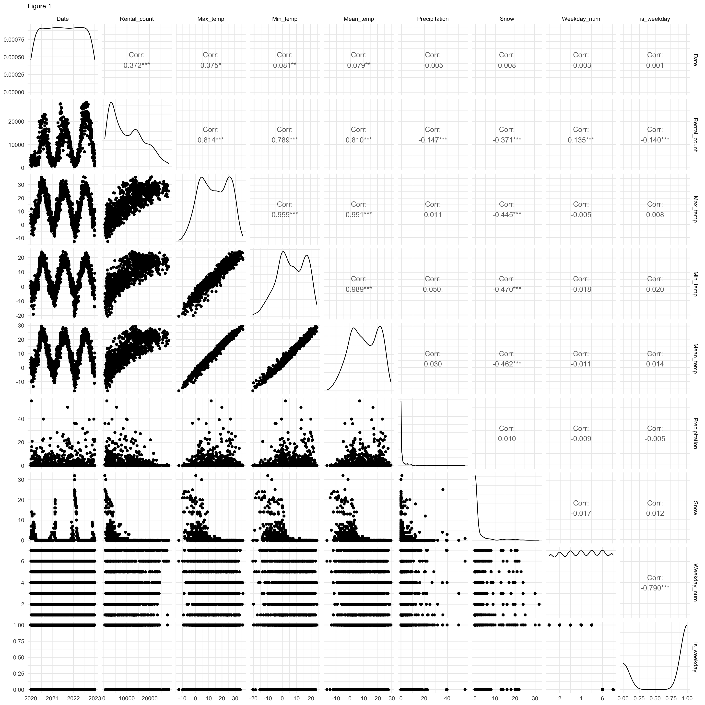
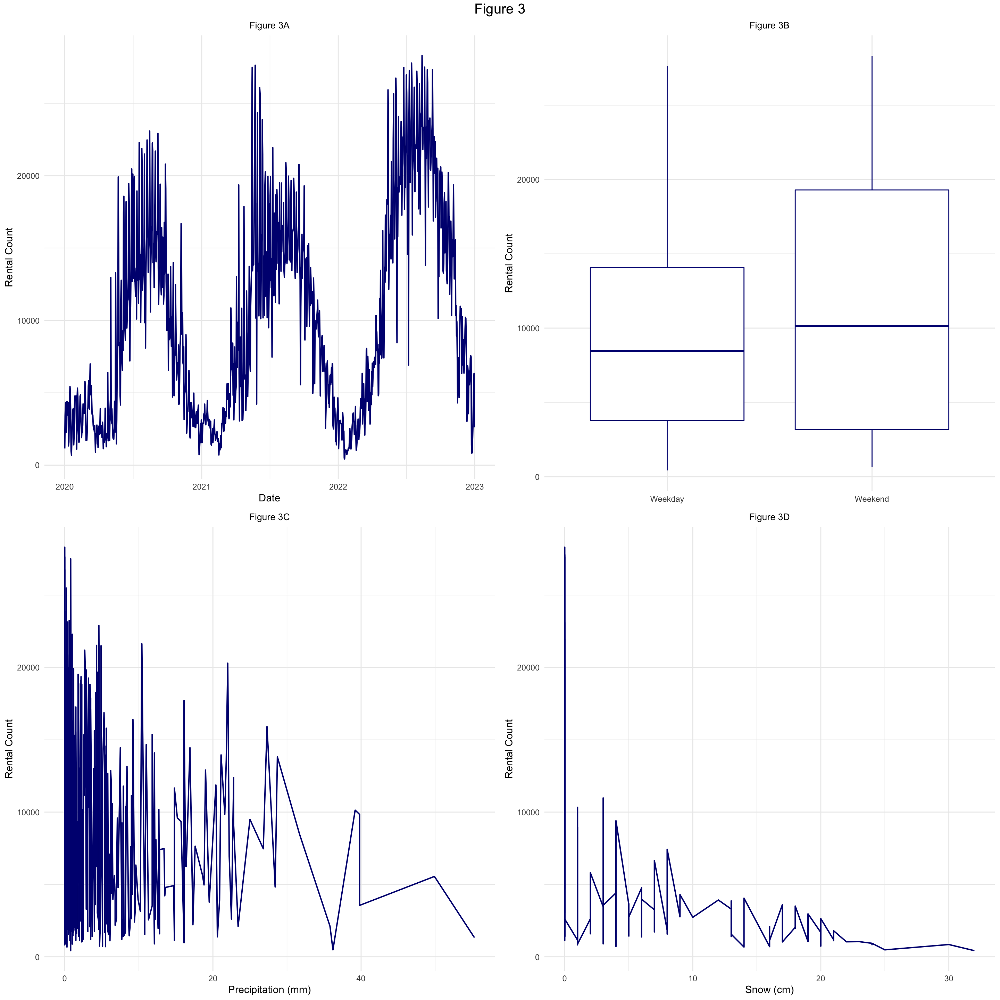

JSC370 Midterm Report
Evelyn Chou
2023-03-09
Introduction
Bike share systems are programs that offer short term bike rentals to inhabitants of a city, providing a convenient and cheaper alternative to purchasing a bike for thousands of dollars. Bike Share Toronto, Toronto’s bike share system, offers both one time bike rentals, and annual memberships for a considerably cheaper alternative to purchasing a new bike. In a city such as Toronto, where bike thefts are rampant, they also offer the security of not having to worry about storing your bike in a secure location. Bike Share Toronto has over 600 stations across the city where you can rent and dock bikes. This program is utilized for a multitude of purposes including commute and leisure.
Toronto’s Open Data repository offers monthly data on Bike Share Toronto’s ridership, including variables such as the start and end time of the rental, the bike dock the rental was from, and so much more. Of particular interest in this report is the start date of the rental, which will be used to count the total number of bike rentals in a given day.
Canada’s government website stores data on the historical weather for all weather stations in Canada. Of particular interest in this report is the historical daily weather in Toronto’s weather station. Weather variables in this dataset include maximum, minimum, and average daily temperature (°C), total daily precipitation (mm), and total daily snow (cm).
This study investigates if weather conditions and temporal factors influence the number of bike share users on a given day in Toronto. By understanding the relationship between weather factors, temporal factors, and bike share ridership, the city can understand when maintenance should be performed to avoid inconveniencing members, and when promotions would be viable.
To do this, we will collect Toronto’s Open data repository data on Bike Share Toronto, and Canada’s government on historical daily weather in Toronto’s weather station from January 2020 to December 2022.
Methods
Firstly, we begin by collecting the data necessary to answer the question of interest.
Data Collection
From the Toronto’s Open Data repository, we can obtain the data on
Bike Share Toronto’s ridership. On the page, there are several buttons,
one for each year. We inspect the buttons for 2020, 2021, and 2022, and
obtain the links to download the zipped files for each year. Each file
contains twelve csv files, one for each month. Using R, download the
zipped files and unzip them using the download.file and
unzip, then read in the csvs. After reading in the twelve
csvs for each year 2020-2022, ensure that all the variable types are
consistent. Some variables such as the bike id appeared as integers in
one file, and characters in another. Such variables were converted to a
suitable type for consistency. In the case of bike id’s, all were
converted to integers. Then, combine the data for each month into one
large dataframe for the bikeshare data using bind_rows.
| Trip.Id | Trip..Duration | Start.Station.Id | Start.Time | Start.Station.Name | End.Station.Id | End.Time | End.Station.Name | Bike.Id | User.Type |
|---|---|---|---|---|---|---|---|---|---|
| 7334128 | 648 | 7003 | 01/01/2020 00:08 | Madison Ave / Bloor St W | 7271 | 01/01/2020 00:19 | Yonge St / Alexander St - SMART | 3104 | Annual Member |
| 7334129 | 419 | 7007 | 01/01/2020 00:10 | College St / Huron St | 7163 | 01/01/2020 00:17 | Yonge St / Wood St | 2126 | Annual Member |
| 7334130 | 566 | 7113 | 01/01/2020 00:13 | Parliament St / Aberdeen Ave | 7108 | 01/01/2020 00:22 | Front St E / Cherry St | 4425 | Annual Member |
| 7334131 | 1274 | 7333 | 01/01/2020 00:17 | King St E / Victoria St | 7311 | 01/01/2020 00:38 | Sherbourne St / Isabella St | 4233 | Annual Member |
| 7334132 | 906 | 7009 | 01/01/2020 00:19 | King St E / Jarvis St | 7004 | 01/01/2020 00:34 | University Ave / Elm St | 2341 | Casual Member |
| 7334133 | 1098 | 7041 | 01/01/2020 00:20 | Edward St / Yonge St | 7134 | 01/01/2020 00:38 | Marlborough Ave / Yonge St | 314 | Annual Member |
From the Canada government webpage, we can access the historical
weather data and select Toronto’s weather station. From there, we select
the month and year we wish to obtain. Start with January 2020. The page
has a table with the daily weather data for that month. Inspect the
table and obtain the xml path for it. Then, using R’s xml2
package, we can read in the html table. We then convert that table to an
R dataframe using the rvest package. After obtaining the
dataframe for that month, note that the table does not include which
month or year it was from, it only includes the day of the month. Thus,
we add the month and year of the table we just scraped to the dataframe.
Repeat this for all months from January 2020 to December 2022. Finally,
merge all of these dataframes to obtain the combined Toronto weather
data.
Table 2, shown below, shows the first five rows of the combined Toronto weather data.
| DAY | Max Temp Definition°C | Min Temp Definition°C | Mean Temp Definition°C | Heat Deg Days Definition | Cool Deg Days Definition | Total Rain Definitionmm | Total Snow Definitioncm | Total Precip Definitionmm | Snow on Grnd Definitioncm | Dir of Max Gust Definition10’s deg | Spd of Max Gust Definitionkm/h | month | year |
|---|---|---|---|---|---|---|---|---|---|---|---|---|---|
| 01 | 1.0 | -1.2 | -0.1 | 18.1 | 0.0 | 0.2 | 1 | LegendMM | LegendMM | 1 | 2020 | ||
| 02 | 6.2 | 0.9 | 3.6 | 14.4 | 0.0 | 0.0 | 1 | LegendMM | LegendMM | 1 | 2020 | ||
| 03 | 7.7 | 3.6 | 5.7 | 12.3 | 0.0 | 0.0 | 1 | LegendMM | LegendMM | 1 | 2020 | ||
| 04 | 3.6 | 0.3 | 2.0 | 16.0 | 0.0 | 1.5 | 2 | LegendMM | LegendMM | 1 | 2020 | ||
| 05 | 1.9 | -1.2 | 0.3 | 17.7 | 0.0 | 5.6 | 2 | LegendMM | LegendMM | 1 | 2020 | ||
| 06 | 2.9 | -1.7 | 0.6 | 17.4 | 0.0 | 0.2 | 7 | LegendMM | LegendMM | 1 | 2020 |
Data Cleaning and Wrangling
Tables 1 and 2, from the previous “Data Collection” subsection, provide us with an overview of the data we will be using to answer the question of interest. However, before that can be done, some data cleaning and data wrangling needs to be done. We will start with the bikeshare data.
We are not actually using most of the variables in the bikeshare data, we only wish to obtain the number of daily bike rentals. Thus we will not clean the variables in the bikeshare dataset, instead we will wrangle the data to obtain our variable of interest: daily rental count. We will use the start date of each bike rental as the day it was rented. So if a bike was rented at on January 1st, and returned on January 2nd, we will count this bike in the January 1st rentals.
To do this, first convert the start date of each rental into a Date object. Then, count the number of rows for each date (this is the number of rentals for each date) and save this in a separate dataframe “count”.
Table 3, shown below, shows the first five rows of this new dataframe. Column “n” is the number of bike rentals on that date.
| Date | n |
|---|---|
| 2020-01-01 | 1153 |
| 2020-01-02 | 3425 |
| 2020-01-03 | 4311 |
| 2020-01-04 | 2620 |
| 2020-01-05 | 2278 |
| 2020-01-06 | 3249 |
After wrangling the bikeshare data, we now clean and wrangle the weather data.
First, consider some rows of the current dataframe. Table 4 below shows the 101-105th rows of the weather dataframe, which have some problematic entries.| DAY | Max Temp Definition°C | Min Temp Definition°C | Mean Temp Definition°C | Heat Deg Days Definition | Cool Deg Days Definition | Total Rain Definitionmm | Total Snow Definitioncm | Total Precip Definitionmm | Snow on Grnd Definitioncm | Dir of Max Gust Definition10’s deg | Spd of Max Gust Definitionkm/h | month | year | |
|---|---|---|---|---|---|---|---|---|---|---|---|---|---|---|
| 101 | Avg | 7.4 | 0.5 | 4.0 | 3 | 2020 | ||||||||
| 102 | Xtrm | 18.4 | -7.7 | LegendMM | LegendMM | 12.1 | LegendMM | LegendMM | 3 | 2020 | ||||
| 103 | Summary, average and extreme values are based on the data above. | Summary, average and extreme values are based on the data above. | Summary, average and extreme values are based on the data above. | Summary, average and extreme values are based on the data above. | Summary, average and extreme values are based on the data above. | Summary, average and extreme values are based on the data above. | Summary, average and extreme values are based on the data above. | Summary, average and extreme values are based on the data above. | Summary, average and extreme values are based on the data above. | Summary, average and extreme values are based on the data above. | Summary, average and extreme values are based on the data above. | Summary, average and extreme values are based on the data above. | 3 | 2020 |
| 104 | 01 | 9.4 | 2.7 | 6.1 | 11.9 | 0.0 | 0.6 | LegendMM | LegendMM | 4 | 2020 | |||
| 105 | 02 | 14.1 | 3.5 | 8.8 | 9.2 | 0.0 | 1.1 | LegendMM | LegendMM | 4 | 2020 |
From Table 4, observe that in rows 101-103, the entries in column “DAY” are not actually the day of the month, but are summary statistics of that month instead. We remove all such columns in the data. Then, observe that in column “Snow on Grnd Definitioncm”, there are many missing entries. Since this variable is of interest, we check the data to see why, and notice that missing entries mostly occur in the warmer months with no snow. Thus, we replace all such empty entries in the column with “0”. Problematic entries in other columns such as “Grnd Definitioncm” are not of concern, since we are not using those variables. In fact, we will soon be dropping those unused variables from the dataframe.
Then, create a Date variable using the variables containing the month, day, and year (the “month”, “DAY”, and “year” columns in Table 2 and Table 4). Then unused variables (such as flags indicating status of data collection) were removed, and only the date, maximum, minimum, and average temperature, amount of precipitation, and amount of snow were kept. Rename these variables (aside from date) as “Max_temp”, “Min_temp”, “Mean_temp”, “Precipitation”, and “Snow” respectively.
Then, new temporal variables (such as the day of the week, and whether a day is on the weekend, etc.) were created for the weather dataframe using the date variable.
Data Merging
After cleaning and wrangling the bikeshare daily rental counts and weather data, we now merge the two dataframes by their dates. Beginning at this point in the report, we shall refer to this as our dataset.
Table 5 below shows the first five rows of our dataset that we will be using to answer our question of interest.| Date | Rental_count | Max_temp | Min_temp | Mean_temp | Precipitation | Snow | Weekday | Weekday_num | is_weekday |
|---|---|---|---|---|---|---|---|---|---|
| 2020-01-01 | 1153 | 1.0 | -1.2 | -0.1 | 0.2 | 1 | Wednesday | 3 | 1 |
| 2020-01-02 | 3425 | 6.2 | 0.9 | 3.6 | 0.0 | 1 | Thursday | 4 | 1 |
| 2020-01-03 | 4311 | 7.7 | 3.6 | 5.7 | 0.0 | 1 | Friday | 5 | 1 |
| 2020-01-04 | 2620 | 3.6 | 0.3 | 2.0 | 1.5 | 2 | Saturday | 6 | 0 |
| 2020-01-05 | 2278 | 1.9 | -1.2 | 0.3 | 5.6 | 2 | Sunday | 7 | 0 |
| 2020-01-06 | 3249 | 2.9 | -1.7 | 0.6 | 0.2 | 7 | Monday | 1 | 1 |
Data Exploration
Finally, now that our datasets have been cleaned, wrangled, and merged, we will begin to explore the data in greater detail.
Begin by looking at univariate summary statistics of our variable in Table 6 below.| Variable | Min | Q1 | Median | Mean | Q3 | Max |
|---|---|---|---|---|---|---|
| Rental Count | 425 | 3692 | 8846 | 10137 | 15302 | 28307 |
| Max Temperature (°C) | -12.6 | 4.9 | 14.4 | 14.3 | 24.0 | 35.8 |
| Min Temperature (°C) | -20.4 | -0.6 | 6.6 | 6.5 | 15.2 | 24.1 |
| Mean Temperature (°C) | -16.5 | 2.2 | 10.2 | 10.4 | 19.7 | 29.4 |
| Precipitation (mm) | 0.0 | 0.0 | 0.1 | 2.1 | 1.3 | 55.3 |
| Snow (cm) | 0.0 | 0.0 | 0.0 | 1.4 | 0.0 | 32.0 |
| a numerical summaries for the Date and day of the week are omitted, as it does not provide meaningful information. |
From Table 6, notice that the maximum rental count in a day is 28307, which is vastly more than the minimum rental count of 425 in a day. The rental count aslo appears to be right skewed. Notice that variables for precipitation and snow also appear severely right skewed.
Now let us take a closer look at Figure 1 below, which is a visualization of the variables of interest in the data. Note that variable “Weekday” is omitted as “Weekday_num” contains the same information in a numerical manner. Note that along the diagonal of Figure 1 is a line graph of the number of observations. The top right corner contains the Pearson correlation coefficient between each pair of variables. The more significant the correlation coefficient is, the more stars there are. For example, “*” is “slightly significant” (alpha = 0.05) while “***” is “very significant” (alpha = 0.001). The bottom left corner contains the scatter plots between each pair of variables.

Note that the correlation coefficient in Figure 1 is calculated using Pearson’s correlation coefficient, which is not reliable for nonlinear relationships.
From Figure 1, note that the “Rental_count”, “Precipitation”, and “Snow” are all severely right skewed, as noted before. Also notice significant levels of correlation between the “Rental_count” and all variables. Note that the presence of a linear correlation in the other variables does not mean their actual relationship with “Rental_count” is linear. More in depth investigation would need to be conducted to determine the exact nature.
There is also significant correlation between the minimum, mean, and maximum temperatures (which is expected), so perhaps if we were to fit a model we would only want to select one of the temperature variables. Also notice the periodic relationship between temperature and date.
There is also a significant imbalance in the “is_Weekday” variable, which is expected, as there are more weekdays than weekends in a year. This is something to note as it may skew any results concerning this variable.
A further point of interest is the scatter plot between “Precipitation” and “Snow”, where we notice a few outlier points with both large amount of rain and large amounts of snow. This is interesting, as rain and snow do not usually occur together in such large amounts on the same day.
Additionally, there are so many data points that it is impossible to tell the relationship between some pairs of variables using these scatter plots. For example, between Weekday_num and Date. This is acceptable for our purposes, as we are not specifically interested in the relationship between these variables, just if there are any major issues that could affect our ability to answer the question of interest. However, in the future it may be necessary to redo the plots with perhaps a subset of the data if we desire to model these relationships.
Preliminary Results
| Date | Rental Count | Max Temperature (°C) | Min Temperature (°C) | Mean Temperature (°C) | Precipitation (mm) | Snow (cm) | Weekday |
|---|---|---|---|---|---|---|---|
| 2022-08-13 | 28307 | 25.2 | 13.6 | 19.4 | 0.0 | 0 | Saturday |
| 2022-07-16 | 27785 | 29.2 | 18.4 | 23.8 | 0.0 | 0 | Saturday |
| 2021-05-24 | 27636 | 20.9 | 13.0 | 16.9 | 0.0 | 0 | Monday |
| 2022-08-20 | 27505 | 30.0 | 19.5 | 24.8 | 0.8 | 0 | Saturday |
| 2022-06-25 | 27501 | 29.6 | 18.4 | 24.0 | 0.0 | 0 | Saturday |
From Table 7, notice that all the days have a reasonable minimum and maximum temperature (not too cold and not too hot), no (or very little) rain, no snow, and most interestingly, most days are on a Saturday. Also note that the Monday was a holiday. Furthermore, four of the top 5 days are in 2022, only one is in 2021, and there are none in 2020. This may be due to increase in ridership over time, or the COVID situation in 2020.
| Date | Rental Count | Max Temperature (°C) | Min Temperature (°C) | Mean Temperature (°C) | Precipitation (mm) | Snow (cm) | Weekday |
|---|---|---|---|---|---|---|---|
| 2022-01-18 | 425 | 0.2 | -10.1 | -5.0 | 0.8 | 32 | Tuesday |
| 2022-01-17 | 482 | -2.3 | -5.0 | -3.6 | 36.2 | 25 | Monday |
| 2020-01-19 | 676 | 1.3 | -10.4 | -4.5 | 0.3 | 14 | Sunday |
| 2021-02-16 | 702 | -6.4 | -12.0 | -9.2 | 5.5 | 16 | Tuesday |
| 2020-12-25 | 720 | 0.2 | -4.7 | -2.2 | 5.1 | 4 | Friday |
From Table 8, notice that all days are very cold, and often have some snow or precipitation. The day of the week appears to have less effect here than in Table 7, as there is a wide range here. Notice that these dates also all occur in Dec-Feb winter months.

In Figure 2, notice that the trend appears to be relatively
similar for both mean, max, and min temperatures (Figure 2A, Figure 2B,
and Figure 2C respectively). Also notice large fluctuations in rental
count as the temperature increases, indicating that much of the
variation in the rental count is still not explained by the temperature.
However, there is a clear trend that increase in temperature increases
rental count, at least up to a certain point. Once max temperature is
too high (roughly above 30°C), then the rental count starts to fall
again (see Figure 2B). Also notice that as the temperature increases,
the variation in rental count also increases.

In figure 3A, notice the clear trend of increasing ridership count
in the summer months, then decreasing ridership count in the winter
months. Also note that date and temperature are correlated, so the
relationship seen here could be a reflection of the relationship seen in
Figure 2. Again note the large variations in rental count across the
dates. For example, in the middle of 2022, there are a few very large
dips in the rental count. Also note how the variation in rental count is
higher in the summer months than in winter months.
From Figure 3B, notice that the median of the rental counts for the weekday and weekend are actually relatively similar (differing by about 1500) whereas the third quantile differs greatly (by about 5000), indicating that there tends to be a higher rental count more often on the weekend. Recall from Figure 2 and 3A how when the temperature is lower (i.e. in the winter months), there is less variation in the rental counts, and there is also lower rental count. This is reflected here in Figure 3B, where being on the weekend or not has less impact on the rental count when the rental count is low. Perhaps being on the weekend or not instead explains the variation in rental counts when the temperature is high (i.e. in the summer months).
From Figure 3C, notice that when precipitation is low, there is very large variation in rental count, however when the precipitation increases, the rental count also tends to decrease somewhat. Do note that there are not many data points with more than 30 mm of precipitation, so trends seen may not be generalizeable. Also note that rain does not tend to fall in the colder winter months, where there is less bike ridership (as seen in Figure 2 and Figure 3A).
From Figure 3D, first notice that for nonzero values of snow, the variation in rental count is not very large, especially as the amount of snow increases. Do note that there is not a lot of nonzero data on snow, so this may not be generalizable. However, from the data that we do have, even a little amount of snow appears to cap the rental count at 12000 per day. Also note that snow is correlated with temperature, in that it generally only appears in the cold winter months, where there is less bike ridership (as seen in Figure 2 and Figure 3A).
Some lingering issues with Figure 3C and Figure 3D is that the precipitation and snow is recorded for the entire day, and it is unknown whether this occurred late at night and/or for a very short amount of time, resulting in less impact on ridership for that rainfall/snowfall. To investigate this, hourly data would need to be used instead.
Conclusions
The question of interest an investigation on if weather factors and temporal factors influence the number of bike share users on a given day in Toronto. From the preliminary analysis of the data, we have gained several insights. First, from the tables we see that days with high ridership count tend to have a comfortable temperature, be on a weekend or holiday, and have no rain or snow (see Table 7). On the other hand, days with low ridership count tend to be cold days (below 0°C), likely with precipitation or snow (see Table 8). Then, more generally, as the temperature increases, the ridership count increases, and the variation in the ridership count also increases (see Figure 2). Furthermore, in the summer months the ridership count increases (and has higher variation), and in the winter months the ridership count decreases (and has lower variation) (see Figure 3A). These two insights reflect themselves in Figure 3B, where lower ridership counts appear evenly spread between weekdays and weekends, but higher ridership counts occur more often in weekends. Finally, both the occurrence of snow and/or precipitation (that is, a nonzero value), tends to decrease the ridership count (see Figure 3C and Figure 3D).
Limitations
Since the weather data used is daily weather data, this does not capture any patterns within the day. For example, there may be both large amounts of snow and a large bike rental count for some day if the snow occurs late at night, after many people have already rented bikes earlier that day. For the temperature variables, we also do not know exactly when an extreme low or high temperature us (although we can make inferences based on our own knowledge). Thus, there is an underlying assumption that the weather variables are representative of the entire day.
There is also an underlying assumption that the weather data we collected from the Toronto weather station is representative of Toronto as a whole, while that may not be the case. Bike Share Toronto has bike stations over almost 200 km2. That is a very large area, and weather conditions within the areas may also vary.